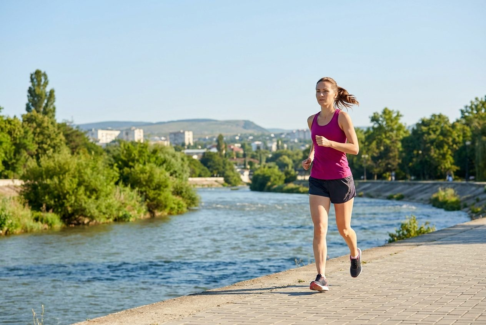

СтартОт нуля до финишного протокола: 8-12 недель по плану клуба ПРОБег
Пошагово: сначала честный тест вашего уровня, потом три фазы — база, темп, длинная, — а в конце taper и план на день забега. С цифрами по неделям, объёму и темпу, без модных планов на 80 км в неделю. Для тех, кто бегает в Симферополе и хочет финишировать на Мадере или Яблочном трейле.
Первый забег — это не про скорость и не про «побить рекорд». Это про то, чтобы выйти на старт, спокойно добежать до финиша и получить медаль. Для этого не нужны 80 километров в неделю и не нужен тренер-марафонец. Нужен план, регулярность и понимание, что происходит с телом по неделям. Ниже — схема на 8-12 недель, которую мы в клубе ПРОБег отработали на тренировках в Симферополе: для тех, кто идёт на свой первый 5 или 10 км, в том числе на осенние крымские старты вроде Мадеры в Коктебеле или Яблочного трейла.
С чего начать: честный тест вашего уровня
Прежде чем качать объём и искать план на 12 недель, ответьте себе на один вопрос: сколько минут вы сейчас можете бежать без остановки в лёгком, разговорном темпе? Это и есть ваша отправная точка.
Тест простой: выйдите на пробежку и бегите в темпе, в котором можете говорить фразами по 5-7 слов. Засеките момент, когда нужно перейти на ходьбу. Если получилось меньше 10 минут — ваш горизонт 8-12 недель на 5 км, и начинать нужно с чередования бега и ходьбы. Если 20-30 минут — 8 недель на 5 км реальны, а на 10 км — 10-12 недель. Если 40+ минут непрерывного бега — вам хватит 6-8 недель на 5 км, 8-10 на 10 км. Тренируетесь вы в Симферополе — стартовая точка одна и та же, что для клуба ПРОБег, что для самостоятельных занятий. Про первые недели бега мы подробно писали в статье о старте с нуля — там пошаговый план для тех, кто сейчас в категории «меньше 10 минут».
3 тренировки в неделю, не больше
Главная ошибка новичка — попытка бегать каждый день, чтобы «быстрее подготовиться». На практике это работает наоборот: через 2-3 недели ежедневного бега появляются боли в коленях, ахилле, голени, организм не успевает восстанавливаться, и план рассыпается. Для первого забега достаточно 3-4 беговые тренировки в неделю.
Схема, которая работает в клубе ПРОБег и для самостоятельных занятий: 3 дня бега + 1 день силовой (без бега) + 3 дня отдыха. В неделе: вторник (открытая пробежка у Гагаринского парка, 20:00, всегда бесплатно), среда (темповая или интервалы, 19:00), пятница (ОФП для бегунов, без бега, 19:00), воскресенье (длинная пробежка 20+ км, 09:00). Понедельник, четверг, суббота — дни отдыха. Этого достаточно, чтобы к 10-12 неделе выйти на пик формы, не угробив колени. Если вы только начинаете и сейчас в категории «не могу пробежать 10 минут» — посмотрите первую неделю бега с нуля, там подробнее про вход в регулярные тренировки.
Недели 1-4: база, чередование бега и ходьбы
Первая фаза — привыкание к регулярным тренировкам. Тело учится бегать без остановки через короткие интервалы. Это нормальный и единственно правильный путь с нуля, никакой «слабости» в чередовании бег-ходьба нет — так тренируются все любители мира, так готовятся к первой десятке в клубе ПРОБег.
Схема по неделям для 5 км (ориентир):
- Неделя 1: 3 тренировки по 20-25 минут. Формат — 1 минута лёгкого бега + 2 минуты ходьбы, 6-8 повторов.
- Неделя 2: 3 тренировки по 24 минуты. 2 минуты бега + 2 минуты ходьбы, 6 повторов.
- Неделя 3: 3 тренировки по 20-24 минуты. 3 минуты бега + 1-2 минуты ходьбы, 5-6 повторов.
- Неделя 4: 3 тренировки по 25-30 минут. 5-8 минут непрерывного бега + 2-3 минуты ходьбы, 2-3 повтора. Появляется первая «длинная» — 15-20 минут непрерывного бега в воскресенье.
Главное правило этих недель: бег в темпе, в котором можете спокойно разговаривать. Если задыхаетесь — сбавьте. Про пульсовые зоны у нас есть отдельный разбор — там понятно, какой пульс должен быть в лёгком беге и почему не надо тренироваться «на максимуме» с первого дня.
Недели 5-8: длинная пробежка и первые интервалы
Вторая фаза — организм привык к регулярным нагрузкам, и теперь можно усложнять работу. Две ключевые вещи: длинная пробежка растёт, появляется одна скоростная сессия в неделю.
Длинная пробежка. Это самая важная тренировка цикла. На 5-й неделе она уже 25-30 минут непрерывного бега, к 8-й — 40-50 минут или 7-8 км. Бежим в лёгком темпе, в компании, по Салгирке или в парке Гагарина — где удобно. Цель — не скорость, а время в движении. Тело учится использовать жиры как топливо, мышцы и связки адаптируются к длинной нагрузке. По нашему опыту в клубе ПРОБег, те, кто регулярно бегает длинную по воскресеньям, к финишу 5 или 10 км приходят заметно увереннее, чем те, кто просто наматывает одинаковые 30 минут три раза в неделю.
Первая скоростная сессия. С 6-й недели добавляем одну тренировку в неделю с интервалами. Простая схема: 4-6 отрезков по 400 м в темпе чуть быстрее обычного, между отрезками — 2-3 минуты лёгкого бега или ходьбы. Или другая схема: 10-15 минут разминки, 2-3 повтора по 6 минут в темпе «не быстро, но уже не лёгкий», 10 минут заминки. Этого достаточно, чтобы запустить адаптацию к скорости без риска травм. Более подробно про технику бега и каденс — в отдельной статье, важно не набирать темп ценой постановки пятки и тяжёлого приземления.
Недели 9-12: пик формы и taper
Третья фаза — выход на пик и грамотный спуск. Здесь многие ошибаются: продолжают наращивать объём до самого старта и приходят «перетренированными». Правильная стратегия — пик за 2-3 недели до забега, затем снижение (taper), чтобы тело подошло к старту свежим.
Пик для 5 км: 9-10 неделя — пиковый объём около 25 км в неделю, длинная пробежка 8-10 км или 55-60 минут. Для 10 км: 10-11 неделя — пиковый объём 35-45 км в неделю, длинная пробежка 11-13 км (длиннее соревновательной дистанции). Длинная — в лёгком, разговорном темпе: на 45-90 секунд медленнее того, что планируете на забеге. Если цель — пробежать 10 км за 6:00 мин/км, длинная идёт в темпе 6:45-7:30 мин/км.
Taper (последние 1-2 недели перед стартом): снижаем объём на 30-50%, но НЕ снижаем интенсивность. Один интервальный или темповой отрезок в неделю оставляем — он «напоминает» телу про скорость. Длинная укорачивается до 5-6 км на финальной неделе. Темп на забеге: для 5 км — обычно 5:30-6:30 мин/км, для 10 км — 6:00-6:30 мин/км. Это ориентиры для новичка; ниже расскажу, как подобрать лично вам. Во время taper полезно следить за пульсом покоя — он должен вернуться к вашей обычной норме за 5-7 дней до старта, это сигнал что taper идёт правильно.
Силовая и ОФП в цикле подготовки
Бег — это не только бег. Силовая работа для бегунов закрывает сразу несколько задач: укрепляет мышцы и связки вокруг коленного сустава, улучшает каденс и экономичность, снижает риск травм. В клубе ПРОБег пятничная ОФП в 19:00 — обязательная часть подготовки, особенно для тех, кто готовится к забегу.
Минимальная программа ОФП для бегуна: приседания на одной ноге 3 подхода по 8 повторений на каждую ногу, выпады с шагом 3×12, подъёмы на носки с паузой 3×15, планка боковая 3×45 секунд, баланс на одной ноге 3×30 секунд, ягодичный мост 3×12. Занимает 20-25 минут, делается 1-2 раза в неделю, в дни отдыха от бега. Про ОФП для бегунов у нас есть отдельный разбор на 5 упражнений с описанием техники.
Питание в дни тренировок и перед стартом
Тема большая, поэтому здесь только ключевые точки — а подробный разбор по числам у нас в статье о питании бегуна. Главное, что нужно знать для подготовки к забегу.
В дни тренировок: 1-2 г углеводов на кг массы тела за 2-3 часа до пробежки (тарелка овсянки с бананом, рис с курицей, тост с мёдом). В первые 1-2 часа после финиша: 20-30 г белка + 40-60 г углеводов (творог с бананом, курица с рисом, омлет с тостом). В дни отдыха — обычное питание, без перекосов в любую сторону. В Симферополе жарко, поэтому на тренировках длиннее часа — 200-250 мл воды каждые 20 минут, на дистанции от 60 минут — добавляем щепотку соли в воду или изотоник. Про бег в жару у нас есть отдельный разбор, там подробнее.
В день забега: за 2-3 часа — лёгкий знакомый завтрак (то, что ели на длинных), за 30 минут — банан или пара фиников. На 5 км пить только воду по ходу. На 10 км — 1-2 геля или 3-4 финика по дистанции. Не экспериментируйте с едой в день старта: всё, что планируете съесть, должно быть опробовано на тренировках за 1-2 недели до забега.
Сон, восстановление и пульс покоя
Сон — главный бесплатный допинг для бегуна. В цикле подготовки к забегу 8-9 часов сна — норма, а не роскошь. Именно во сне мышцы восстанавливаются, нервная система перезагружается, закрепляются тренировочные адаптации. Если спите 5-6 часов — прогресс пойдёт медленнее, риск травм и простуд вырастет.
Пульс покоя — простой индикатор перетренированности. Утром, до подъёма с кровати, измерьте пульс за 30 секунд и умножьте на 2. Ваша норма — примерно постоянное число плюс-минус 3-4 удара. Если утром пульс стабильно выше обычного на 5-10 ударов — это сигнал: организм не восстановился. Решение — лёгкая пробежка вместо интервалов, дополнительный час сна, лёгкий ОФП.
Восстановление между тренировками: 1-2 дня в неделю — полный отдых (без спорта), 1-2 дня — лёгкое ОФП или растяжка 15-20 минут. Про разминку и заминку у нас есть короткий разбор на 5-7 минут до и 10-15 минут после пробежки — это не опционально, а обязательно.
За неделю до старта: что менять и что нельзя трогать
Неделя перед забегом — самая нервная. Хочется «добегать что-то», «проверить силы», «просто для уверенности». Не надо. Лучшая тактика — доверить план и следовать ему.
Меняем: объём (снижаем на 30-50%), длинную пробежку (с 12-13 км до 5-6 км), общее количество тренировок (можно оставить 2-3 за неделю вместо 4). Не трогаем: интенсивность (один короткий интервальный отрезок в темпе соревновательном — оставляем за 3-4 дня до старта), питание (то же, что на тренировках, никаких экспериментов), режим сна (ложиться в обычное время, не пытаться «выспаться впрок»). За 2-3 дня до забега — короткая пробежка 20-30 минут в лёгком темпе, чтобы ноги «помнили» движение. За день до забега — отдых, лёгкая растяжка, знакомая еда, никакого алкоголя.
Снаряжение на забег: проверенные кроссовки (не новые, разношенные на длинных), привычная форма, бутылка воды, телефон, стартовый номер и чип. Если забег утром — заранее приготовьте одежду с вечера. Если бежите в Симферополь и обратно — закладывайте время на дорогу, чтобы не нервничать перед стартом. Перед стартом — короткая разминка 5-7 минут: лёгкий бег или ходьба, махи ногами, круговые движения в тазобедренном суставе, 1-2 ускорения по 50-80 м. С ней первые 2 км пойдут легче.
День забега: разминка, темп, финиш
Утро забега. За 2-3 часа — лёгкий завтрак (тарелка овсянки, банан, чай). За 40-60 минут до старта — приехать на место, забрать номер, переодеться, сходить в туалет. За 20-30 минут до старта — разминка: 5-7 минут лёгкого бега или ходьбы, 3-4 динамических упражнения (махи ногами, круговые движения в тазобедренном суставе, приставные шаги), 1-2 ускорения по 50-80 м. Цель разминки — разогреть мышцы, поднять пульс, размять суставы. Без разминки первые 2 километра будут тяжёлыми, а риск травмы выше.
Стратегия на забег. Первые 1-2 км — медленнее целевого темпа на 10-15 секунд. Адреналин на старте обманывает: кажется, что летишь, а к 3-му км приходит отрезвление и темп падает. Лучше выйти на цель позже, чем «сесть» в яму на 4-5 км. С 3-го км — целевой темп, ровный, без рывков. На 5 км — финиш на 28-35 минуте (для новичка это нормально). На 10 км — финиш на 60-70 минутах. Главное — равномерно, не ускоряясь в середине и не умирая в конце.
На финише — не останавливайтесь резко. Продолжайте двигаться шагом 5-10 минут, выпейте воды, перейдите к заминке и растяжке 10-15 минут — иначе на следующий день будет крепатура. В течение часа — перекус (банан, шоколадка, что-то знакомое). Через 1-2 часа — полноценный обед. Вот и всё — медаль на шее, протокол с личным временем, и в клуб ПРОБег на воскресную длительную уже на новом уровне. Если после забега почувствуете, что техника бега требует разбора — записывайтесь на индивидуальное занятие, разберём каденс, работу рук и постановку стопы.
Частые вопросы
За сколько недель реально подготовиться к первому забегу на 5 км с нуля?
8 недель — оптимальный срок для новичка, если сейчас вы можете бежать 20-30 минут в лёгком темпе или чередовать бег с ходьбой. Первые 3-4 недели уходят на привыкание к регулярным тренировкам и плавный переход от интервалов бег-ходьба к непрерывному бегу. Оставшиеся 4-5 недель — на закрепление и тестовый 5-километровый пробег. Если сегодня вы не можете пробежать 10 минут без остановки — закладывайте 10-12 недель и начинайте с более длинных интервалов ходьбы в тренировке.
Я бегаю 2-3 раза в неделю по 30 минут. Мне хватит 8 недель на 10 км?
Да, 8 недель хватит, но с оговорками. Базовый уровень у вас уже есть — 30 минут непрерывного бега. Главное в подготовке к 10 км — не скорость, а длинная пробежка хотя бы 11-13 км в лёгком темпе, чтобы тело «помнило» время в движении. За 8 недель длинная вырастет с 6-7 до 11-12 км, пиковый недельный объём — до 30-35 км. Темп на забеге — 6:00-6:30 мин/км, в зависимости от пульса. Безопаснее заложить 10-12 недель, чтобы не прыгать через 10% в неделю.
Нужно ли бегать каждый день?
Нет, и для любителя это даже вредно. 3-4 беговые тренировки в неделю — оптимум, который даёт прогресс без травм. Между пробежками организм восстанавливается: мышцы адаптируются, связки укрепляются, гликоген восполняется. Если бегать каждый день, через 2-3 недели появятся боли в коленях, ахилле, голени. В клубе ПРОБег расписание построено так: 4 тренировки в неделю — вторник, среда, пятница (ОФП, без бега), воскресенье. Понедельник, четверг, суббота — дни отдыха или лёгкого ОФП дома.
Сколько километров в неделю нужно к пику формы?
Для первого забега на 5 км — 15-20 км в неделю к 6-7 неделе, пик около 25 км. Для первого забега на 10 км — 25-30 км к 8 неделе, пик 35-45 км на 10-11 неделе. Главное правило — не больше 10% прибавки объёма за неделю, и каждая 4-я неделя чуть легче (разгрузочная). Темп в этих километрах — лёгкий, разговорный: вы должны мочь говорить фразами. Быстрые километры добавляем только в одной тренировке в неделю — на интервалах или темповой.
Что съесть утром перед забегом?
За 2-3 часа до старта — лёгкий завтрак с 1-2 г углеводов на кг веса: тарелка овсянки на воде с бананом и мёдом, или тост с джемом и стакан сока, или рис с яйцом. За 30 минут до старта — небольшой перекус: банан, пара фиников, 5-10 г углеводов. На самом забеге до 60 минут пить только воду. На 10 км — 1-2 геля или пара фиников по дистанции. За неделю до старта потренируйтесь есть то же самое на длинной пробежке — чтобы в день забега не было сюрпризов с желудком.
Какой темп держать на самом забеге — быстрее или медленнее тренировочного?
На первом забеге — медленнее тренировочного, и это нормально. Адреналин на старте обманывает: кажется, что летишь, а к 3-му километру приходит отрезвление и темп падает. Стратегия: первые 2 км — на 10-15 секунд медленнее целевого темпа, дальше выходим на цель и держим ровно. Целевой темп — тот, в котором вы бежите 70-80% тренировочных километров: для 5 км это обычно 5:30-6:30 мин/км, для 10 км — 6:00-6:30 мин/км. Если получится быстрее — отлично, но не планируйте ускорение, планируйте равномерный бег.
Коротко
Подготовка к первому забегу на 5 или 10 км — это 8-12 недель по 3-4 тренировки в неделю: чередование бега и ходьбы в первые недели, длинная пробежка и одна скоростная сессия с 5-6 недели, taper за 1-2 недели до старта. К пику формы выходим на 25-45 км в неделю в зависимости от дистанции. Силовая — обязательно, хотя бы 20 минут раз в неделю. Питание — обычное, без спортпита, с парой проверенных перекусов до и после тренировки. Сон — 8-9 часов. Главное правило: регулярность важнее интенсивности, плавная прогрессия важнее рекордов, и финиш — это не самоцель, а контрольная точка на пути к следующему старту.
В клубе ПРОБег на воскресной длительной в 09:00 мы бегаем по 20+ км, и большинство членов клуба за осень 2026 готовятся к Мадере в Коктебеле (дистанции 3, 6, 10, 25, 42 км, 25 сентября) и Яблочному трейлу (1, 3, 6, 10, 24, 38 км, 10 октября). Если вы сейчас думаете о первом забеге — приходите на открытую пробежку во вторник в 20:00 у Гагаринского парка, это бесплатно, без регистрации. Подробности о времени и маршрутах — в расписании клуба, о ценах — в разделе абонементов.